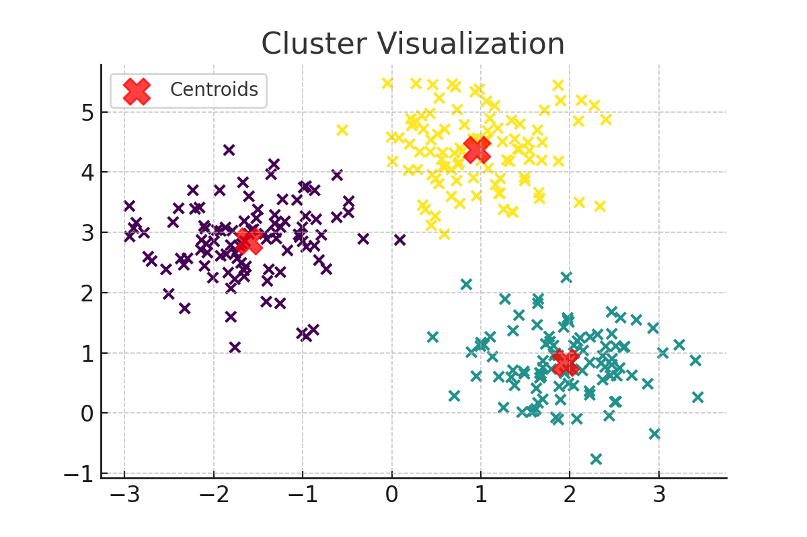

Overview
This artifact demonstrates my technical application of K-Means clustering in a real-world setting, along with the integration of class-based chatbot scenario exercises that explored core ML challenges—handling missing data, noisy datasets, and class imbalance. Through the activity, I refined practical skills in data preprocessing using imputation, smoothing, and balancing techniques.
In parallel, I developed ethical leadership skills in AI through a value-driven reflection on "Navigating Human Bias as a Leader in AI and Education." The activity emphasized strategies like inclusive design, fairness audits, bias-aware training, and stakeholder engagement, especially in education and healthcare sectors where algorithmic decisions have long-term impacts.
This artifact bridges theory and practice, showcasing my growing confidence in both technical ML execution and ethical leadership—essential for today’s AI professionals.
Process
Step 1: Loaded dataset and handled missing values using median imputation.
Step 2: Detected noisy sensor readings and smoothed them using rolling average.
Step 3: Used Elbow and Silhouette methods to determine optimal k for K-Means.
Step 4: Applied SMOTE for class imbalance in separate classification practice.
Step 5: Applied K-Means clustering and visualized segments for business insight.
Elbow Method
Silhouette Scores

Cluster Visualization
Challenges & Solutions
- Imbalanced data: Solved with SMOTE and model-specific class weights.
- Noisy readings: Used moving averages and statistical methods to clean signal data.
- Choosing optimal clusters: Addressed using Elbow and Silhouette plots for evaluation.
Key Takeaways
- Practical chatbot-based activities reinforced critical thinking for real-world ML problems.
- Visualization and data exploration are key to deriving value from clustering techniques.
- Data quality (missing, noisy, imbalanced) must be managed carefully before modeling.
- Ethical leadership in AI involves building inclusive systems from design to deployment.
- Reflection helped connect data science techniques with personal values and career goals.
Reflection
This artifact helped me understand that mastering ML involves not only applying algorithms but knowing when and how to intervene based on data characteristics. The chatbot-driven exercises provided a structured space to work through complex data scenarios while reinforcing good practices. I learned that strategy and technical accuracy both matter, especially when systems impact people’s lives.
The leadership activity made me reflect deeply on my role as an AI developer and the values I bring into my work. I now view fairness, stakeholder voice, and algorithmic accountability as essential pillars—not optional features—in responsible AI.
Conclusion & Future Work
Going forward, I want to implement clustering on larger education datasets and compare K-Means with DBSCAN or Agglomerative clustering. I will also continue to develop leadership skills that prioritize inclusion and transparency. This artifact represents the synergy of practical machine learning skills and ethical intent—both of which define a responsible AI career.